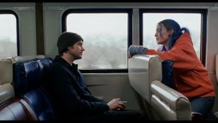

La narración comienza en una fría mañana de febrero, cercana al día de San Valentín, cuando Joel Barish (Jim Carrey), un hombre introvertido, metódico y melancólico, decide impulsivamente faltar a su trabajo y abordar un tren con destino a la playa de Montauk, en Long Island (Wikipedia, 2026). En ese trayecto conoce a Clementine Kruczynski (Kate Winslet), una mujer extrovertida, impulsiva y emocionalmente volcánica, cuyo cabello teñido de azul vibrante contrasta con el paisaje invernal y grisáceo. Entre ambos surge de inmediato una conexión extraña, marcada por una sensación de familiaridad inexplicable que desconcierta tanto a los protagonistas como al espectador (Scudeler, 2024).
Lo que aparenta ser el inicio convencional de una comedia romántica independiente revela pronto un giro narrativo decisivo: Joel y Clementine no son dos desconocidos, sino una expareja que compartió una intensa relación de dos años que terminó en una ruptura amarga (Wikipedia, 2026). Tras una fuerte discusión, Clementine acudió a Lacuna, Inc., una clínica especializada en el borrado selectivo de recuerdos, para eliminar cualquier rastro mnémico de Joel. Al enterarse de esta decisión a través de sus amigos Rob y Carrie —y comprobar en la librería donde trabaja Clementine que ella literalmente no lo reconoce—, Joel queda devastado y decide someterse exactamente al mismo procedimiento (Greco, 2024).
El tratamiento desarrollado por el doctor Howard Mierzwiak (Tom Wilkinson) exige que el paciente reúna en bolsas todos los objetos físicos vinculados con la persona que desea olvidar —fotografías, diarios, regalos, libros y notas— para cartografiar en su cerebro las redes neuronales asociadas a esos recuerdos y provocar sobre ellas un daño focalizado mientras duerme (Greco, 2024; Bertea, 2022, p. 20). Durante la noche, los técnicos de la clínica, Stan Fink (Mark Ruffalo) y Patrick (Elijah Wood), acuden al departamento de Joel para ejecutar el borrado mediante un casco conectado a computadoras portátiles
A partir de ese instante, la mayor parte del metraje transcurre dentro de la mente dormida de Joel, estructurada como un recorrido cronológico inverso que va desde las peleas más recientes y el desgaste cotidiano hasta los primeros encuentros llenos de ternura (Wikipedia, 2026). Sin embargo, ocurre una falla imprevista en el protocolo: Joel adquiere lucidez dentro de su propio sueño y se percata de que sus recuerdos están siendo destruidos. Al revivir los momentos luminosos de la relación —como la noche en que ambos se recostaron sobre el hielo del río Charles contemplando las constelaciones—, Joel comprende que eliminar el dolor conlleva amputar también la alegría y el sentido de su vida (Greco, 2024). Desesperado, intenta sabotear la máquina escondiendo la imagen mental de Clementine en recuerdos de su infancia a los que ella no pertenece, como la cocina de su niñez o episodios de vergüenza infantil (Martínez, 2023).
Mientras Joel lucha dentro de su subconsciente, en el plano físico de su departamento se desarrolla una subtrama paralela protagonizada por los empleados de Lacuna. Patrick aprovecha los objetos y frases íntimas que Joel grabó en su expediente para seducir a una Clementine ya desmemoriada, provocando en ella crisis de angustia inexplicable al percibir ecos de una historia que no logra recordar (Greco, 2024). Por su parte, la recepcionista Mary descubre que en el pasado mantuvo un romance con el doctor Mierzwiak —quien es casado— y que aceptó borrar de su mente aquel episodio tras ser descubiertos por la esposa del médico (Scudeler, 2024).
Indignada al comprender la dimensión ética de lo que ocurre en la clínica, Mary renuncia, sustrae los archivos confidenciales de Lacuna y envía por correo a todos los exclientes las cintas magnetofónicas donde cada uno había enumerado con crudeza los defectos de su expareja antes del borrado (Wikipedia, 2026). De regreso al presente narrativo, tras haberse reencontrado en el tren de Montauk impulsados por el último susurro de Clementine en el recuerdo final antes de colapsar («Búscame en Montauk»), ambos escuchan sus propias grabaciones en el automóvil y en el departamento de Joel. Confrontados con la crudeza de sus reproches pasados y sabiendo que la relación podría volver a fracasar, eligen conscientemente darse una nueva oportunidad sellada con un sencillo y honesto «Okay» (Scudeler, 2024).